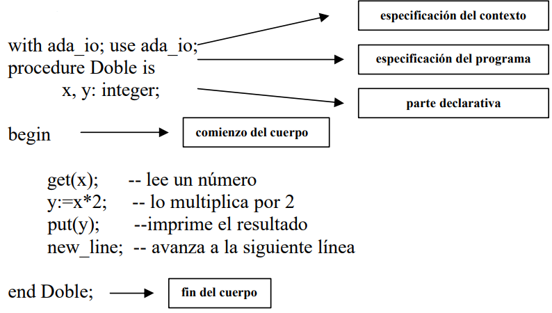
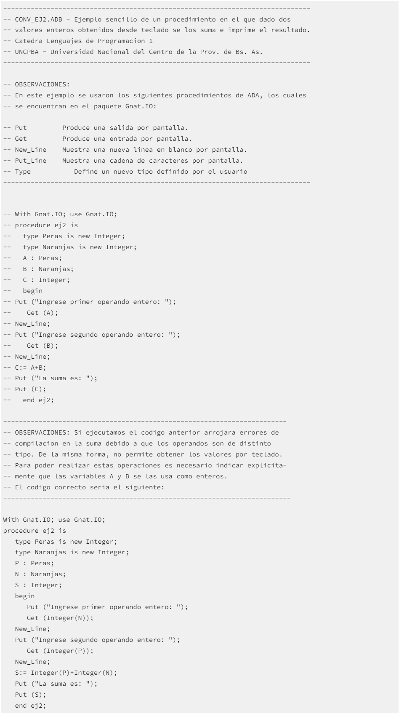

Símbolos
Números
Ada contiene símbolos y uno de ellos son los literales numéricos, constan de:
- dígitos 0 .. 9
- el separador de decimales '.'
- el símbolo de exponenciación 'e' o 'E'
- el símbolo de negativo '-'
- el separador '_'
Literales de tipo carácter
Contienen un único carácter, por ejemplo: A. Aquí sí se diferencian mayúsculas de minúsculas. Se delimitan por un apóstrofe.
'A' 'ñ' '%'
Delimitadores
Otros símbolos de Ada serían los delimitadores, pueden ser uno de los siguientes caracteres especiales:
& ' ( ) * + , - . / : ; < = >
O ser uno de los delimitadores compuestos por dos caracteres especiales:
=> .. ** := /= >= <= << >> <>
Sintaxis
Esqueleto de los programas
Todo programa Ada tiene 4 componentes:
- la especificación del contexto;
- la especificación del programa;
- la parte declarativa;
- el cuerpo.
La parte de especificación del contexto son directivas al compilador Ada. Pueden incluir
determinadas librerías, por ejemplo: la sentencia ”with ada_io” incluye la librería de
entrada/salida, en donde se encuentran los procedimientos que realizan la entrada/salida.
La especificación del programa da el nombre del programa.
La parte declarativa incluye las declaraciones de cualquier objeto. Puede contener
definiciones de variables y procedimientos.
El cuerpo del programa está compuesto de la secuencia de sentencias.
Ejemplo

Aplicación a descargar para editar y ejecutar
GNAT es un conocido compilador del lenguaje de programación Ada, basado en la infraestructura de compilación de GCC. Ha sido escrito casi por completo en el mismo Ada, e implementa todos los anexos del estándar, habiendo sido certificado de ello.
Paradigma
Ada está dentro del paradigma Orientado a objetos e imperativo.
Ejemplo
